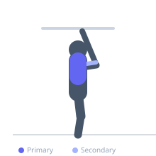

Exercise guide / Close-Grip Lat Pulldown
Close-Grip Lat Pulldown
The close-grip lat pulldown uses a V-bar or narrow handle attachment that positions the elbows close to the torso during the pull. This grip allows a greater range of elbow travel and places substantial load on the biceps alongside the lats, making it a preferred variation for lifters seeking combined lat and biceps development or for those transitioning toward chin-up proficiency.
Primary muscles
latissimus dorsi
Secondary muscles
biceps brachii long head
brachialis
teres major
Stabilizers
trapezius lower
rhomboid major
Equipment
Lat Pulldown Machine
Optional
Cable Machine (High Pulley)


Starting position
- Sit at a lat pulldown machine and attach a V-bar or close-grip handle. Adjust the thigh pad to secure the legs. Grasp the handle with a neutral grip and extend the arms fully overhead, allowing the lats to stretch.
Setup
- Attach a V-bar or close-grip handle to the lat pulldown machine pulley. Set an appropriate weight. Secure thighs under the pad.
Steps
- Step 1: Begin seated with arms fully extended overhead, lats on stretch.
- Step 2: Depress the shoulder blades and initiate the pull by driving the elbows down toward the hips.
- Step 3: Pull the bar toward the upper chest, bringing the elbows close to the sides of the torso.
- Step 4: At the bottom, squeeze the lats and hold briefly.
- Step 5: Return slowly to full arm extension, maintaining scapular control.
Coaching cues
- Lead with the elbows, not the hands
- Think 'elbows to ribs' and they will naturally come to the right position
- Let your chest rise slightly to meet the bar at the bottom
Breathing
- Exhale as you pull the bar down. Inhale as you return to the starting position.
Range of motion
- Full extension at the top to the bar reaching the upper chest at the bottom.
Tempo
- 2-1-2-0 (2s pull, 1s hold, 2s eccentric)
Common mistakes
- Leaning back excessively, which turns the movement into a partial row
- Pulling the bar behind the head, which stresses the cervical spine
- Using momentum by rocking the torso
Safety
- Never pull behind the head — always pull to the front of the chest
- Maintain a neutral or slightly arched lumbar spine throughout
Training
- strength: 5–8 reps
- hypertrophy: 8–15 reps
- endurance: 15–20 reps
- strength: 4–5 sets
- hypertrophy: 3–4 sets
- endurance: 2–3 sets
- Rest: {'strength': 150, 'hypertrophy': 90, 'endurance': 45}